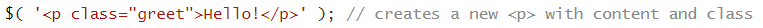

За да разберем по-добре разликите и предимствата на библиотеката jQuery, спрямо чист JavaScript,
преди това ще се запознаем с основите на JavaScript.
Нека накратко споменем
градивните му елементи.
Променливи
Чрез тях можем да запазваме стойности и да ги използваме по-късно. Променливите могат да
съдържат текст, числа, данни (като масиви и обекти), а също и фрагменти код (под формата на функции).
За да създадем локална променлива, използваме думата var .
Можем да използваме браузъра, за
да създадем променлива. В JavaScript не е нужно да указваме типа на променливата,
но можем да го видим с typeof. [1.]
Фиг. 1. Екранна снимка. Създаваме променлива в браузъра и виждаме нейния тип.
Функции
Нека разгледаме следния пример.
Фиг. 2. [1.] "jQuery Fundamentals".
Функция, която намира сумата на две променливи.
Тази функция приема два параметъра и връща тяхната сума. Тя е валидна, но няма как да извикаме резултата,
който е върнала. Можем да я направим по-използваема по следния начин:
Фиг. 3. [1.] "jQuery Fundamentals". Запазваме резултата от функцията в променлива.
По-късно можем да използваме тази променлива, като след името й подадем параметрите, нужни за функцията.
Например, addTwoNumbers(3, 7). [1.]
Обекти
Почти всичко с което работим в JavaScript e обект, с изключение на:
string
boolean
number
undefined
null
Тези стойности се наричат примитиви.
Нека създадем обект човек със следните атрибути.
Фиг. 4. Екранна снимка. Създаваме обект person и извеждаме името и фамилията му.
Има два вида нотации за достъпване на атрибутите - нотация с точка и нотация със скоби,
които се виждат на фигура 4. Втората е удобна за случаите, в които сме запазили в променлива името на атрибута,
който търсим. Тогава в скобите поставяме само името на променливата, както на фигура 5. [1.]
Фиг. 5. Екранна снимка. Нотация със скоби.
Масиви
Това са обекти, използвани за съхранение на множество от стойности, като в JavaScript не е
задължително тези стойности да са от един и същи тип. Елементите на масива достъпваме по познатия начин
чрез скобите [], в които пишем индекса на елемента, който искаме да достъпим. Индексите започват от нула.
[1.]
Фиг. 6. Екранна снимка. Обхождане на елементите на масив.
Логически оператори
Tе ни позволяват да оценяваме операнди чрез операциите && (и) и || (или). На фигура 7 виждаме, че при
използването на ||, ако поне една от стойностите е истина, връща истина, а ако няма стойност,
която да се оценява като истина, тогава връща последната стойност.
Фиг. 7. Екранна снимка. Логическият оператор || връща стойността на последния
елемент, ако няма нито един елемент, който да е истина.
При оператор && върнатата стойност е първата стойност,
която доказва неверността на твърдението, или последната стойност.
[1.]
Трябва да сме наясно и с разликата между операторите == и ===.
Фиг. 8. [1.] "jQuery Fundamentals". Операторът == преобразува двете стойности, така че да са от
един и същи тип.
Двойно равно (==) е оператор за сравняване, който трансформира операндите,
така че да имат един и същ тип преди да бъдат сравнени.
Тройното равно (===) е по-стриктен оператор за сравнение, който връща лъжа, ако стойностите,
които се сравняват не са от един и същи тип. [3.]
Манипулации на DOM (Document Object Model) чрез JavaScript
Какво е HTML DOM?
Моделът DOM е конструиран като дърво от обекти. Това е стандартен обектен модел и интерфейс за програмиране за HTML, който дефинира:
HTML елементите като обекти
Атрибутите на всички HTML елементи
Методите за достъп до всички HTML елементи
Събитията за всички HTML елементи
Атрибутът е стойност, която можем да извлечем или променим.
Методът е действие, което можем да извършим
(като добавянето или изтриването на HTML елемент).
В примера на фигура 10, getElementById e методът,
а innerHtml е атрибутът.
Това е пример как можем да променяме или да добавяме текст в даден HTML документ.
Също, е и пример за
най-често срещания начин да се достъпи елемент - чрез неговото id, както и за това, че най-лесния
начин да извлечем съдържанието на даден елемент, е като използваме атрибута му innerHtml. [2.]
Фиг. 10. [2.] w3schools. Промяна на HTML на елемент с id="demo".
Как можем да манипулираме DOM чрез JavaScript?
HTML DOM документът е обект, който съдържа всички останали обекти в дадена интернет страница. Той я представлява.
Затова, ако искаме да достъпим елемент от страницата, първо трябва да достъпим обекта document. Ето някои
други методи, чрез които можем да достъпваме конкретни елементи:
document.getElementsByTagName(name)
document.getElementsByClassName(name)
Това означава, че можем да достъпваме елементи с конкретен таг, или елементи от даден клас, но в
повечето случаи тези методи ще върнат колекция от елементи, тъй като рядко се случва да имаме само един
елемент с атрибут този клас, или да имаме само един елемент от даден таг. [2.]
Някои методи за променяне на HTML елементи са:
element.innerHTML = new html content
element.attribute = new value
element.style.property = new style
element.setAttribute(attribute, value)
Някои методи за добавяне и изтриване на елементи са:
Нека да разгледаме следния пример за манипулация на DOM чрез JavaScript. В полето трябва да изпишем пълния имейл,
който искаме да изтрием. При събитието "натискане на бутона DELETE", се изпълнява функция, която
изтрива посочения имейл.
Name
Email
Eve
eve@gmail.com
Nick
nick@yahooo.com
Didi
didi@didi.net
Tedy
tedy@tedy.com
Email:
Фиг. 11. Екранна снимка. Функция deleteByEmail.
Забелязваме, че когато премахваме елемент, преди да извикаме метода
.removeChild(trs[i]),
първо достъпваме .parentNode,
което е доста тромав начин за манипулация на елементите на
HTML страницата. По-надолу ще видим как можем да направим това чрез jQuery.
Какво е jQuery?
jQuery е бърза и компактна JavaScript библиотека, създадена от Джон Резиг през 2006 г. с девиза:
"Пишете по-малко, правете повече" (Write less, do more).
jQuery опростява обхождането на HTML документи, обработката на събития, анимирането и
взаимодействието с Ajax (в секцията "Работа с Ajax" ще дадем повече информация). jQuery е JavaScript инструментариум, предназначен да опрости различни
задачи, с писане на по-малко код. [4.]
Как да използваме jQuery?
Има два начина:
Чрез инсталиране локално: Можем да изтеглим библиотеката на нашата машина и да я включим в
HTML документа ни. Можем да я свалим от https://jquery.com/download ,
след което трябва да добавим изтегления jquery-3.5.1.min.js
файл в папката на нашия проект
и да го включим като <script> в HTML документа.
(Добра практика е да го поставим в края на HTML документа.) Съществуват компресирана (.min.js) и
некомпресирана версия. Некомпресираният файл се използва най-добре по време на разработка
или отстраняване на грешки; компресираният файл подобрява
производителността. [4.]
Забележка: когато включваме даден <script>, който използва
jQuery методи към проекта ни,
трябва да го напишем след включването на библиотеката jQuery, защото иначе
нашия <script> няма да работи.
Можете да включите jQuery библиотека във вашия HTML код директно от
мрежата за доставка на съдържание (CDN). <script src="https://code.jquery.com/jquery-3.1.0.min.js"
integrity="sha256-cCueBR6CsyA4/9szpPfrX3s49M9vUU5BgtiJj06wt/s="
crossorigin="anonymous"></script>
Възможности, които jQuery предоставя
Библиотеката jQuery улеснява манипулацията на HTML страниците, след като са показани от браузъра. Също
така, тя предоставя и инструменти, които ни помагат да следим за интеракции от страна на потребителя със
страницата, както и инструменти, с чиято помощ можем да създаваме анимации, и такива, които ни
позволяват да комуникираме със сървър, без да презареждаме страницата. [1.]
Основи на jQuery
Библиотеката предоставя функцията jQuery, която ни позволява да избираме елементи, използвайки
CSS селектори.
Фиг. 12. [1.] "jQuery Fundamentals".
Селектираме всички елементи <li> от HTML документа.
По-често срещано е, обаче, вместо функцията jQuery, да се използва просто $, който е по-кратка и
по-удобна версия на функцията jQuery.
Фиг. 13. [1.] "jQuery Fundamentals". Селектираме всички елементи <li> от HTML документа.
Когато извикаме функцията $ () и й подадем даден селектор, създаваме нов обект jQuery.
Тъй като в JavaScript функциите са обекти, това означава, че $
също има свойства и методи. Например, можем да се обърнем към свойството
$ .support за информация какво поддържа текущата среда на браузъра или да използваме метода
$ .ajax, за да направим AJAX заявка. [1.]
Преди да започнем да използваме jQuery, първо трябва да се подсигурим, че страницата е в състояние на
готовност за манипулации. Постигаме това като поставяме кода си във функция, която подаваме като аргумент
на $(document).ready().
На примера на фигура 14 използваме $(document), за да създадем jQuery обект от нашия document,
за който викаме функцията .ready(), като й подаваме функцията, която искаме да изпълним. Нека онагледим
използването на .ready() със следния пример.
Кликни тук и виж какво ще стане!
Фиг. 15. Екранна снимка. Използване на .ready().
Тъй като
това се използва често, за наше удобство, функцията $ автоматично прави това,
така че можем директно да
напишем следното:
Фиг. 16. [1.] "jQuery Fundamentals". Функцията $ се грижи за това.
Извличане на елементи
Извличането на елементи в jQuery става най-лесно чрез използването на CSS селекторите.
Например, $( 'ul li' ); ще върне колекция от всички елементи на ненареден списък, а
$( '.person' ); връща всички елементи от клас person. Важно е да знаем, че когато селектираме
елементи, върнатата колекция ще съдържа само елементи, които са съществували в HTML страницата, когато се е
изпълнявал кода на нашата функция. Така например, ако имаме функция, която извлича всички елементи на
ненареден списък, и по-късно добавим нов елемент към списъка, то върнатата колекция няма да го съдържа.
Как да проверим дали сме извлякли успешно елементи?
За да проверим дали сме извлякли успешно елементите, които сме указали, не е достатъчно,
като условие в if-клауза да напишем $('#id_of_an_element'), защото jQuery винаги връща обект,
т.е. това условие винаги ще е истина. За да извършим проверката, трябва да напишем
$('#id_of_an_element').length > 0. [1.]
Как да извличаме единичен елемент от колекция?
Често ще искаме да извършваме действия върху единични DOM обекти, но трябва да знаем, че не можем
да използваме jQuery методи за DOM елементи, а само за jQuery обекти. Затова,
кодът на фигура 17 няма да работи. По-надолу, в сравнението между функциите
deleteByEmail и deleteByEmail_jQuery, свързани с примера за
изтриване на имейл от таблица (фигури 23 и 24), можем да видим, че jQuery методът .text()
не може да бъде приложен върху DOM елемента trs[i].cells[1]. За да можем да използваме този метод,
трябва да превърнем DOM елемента, в jQuery елемент ($(trs[i].cells[1])). Върху този jQuery
обект можем да приложим jQuery методът .text().
secondListItem вече е jQuery обект, така че върху него може да се приложи jQuery метод.
Създаване и премахване на елементи
Чрез функцията $ можем да създаваме нови елементи. Ще разгледаме как става това
чрез следните примери, показани на фигури 19 и 20.

Фиг. 19. [1.] "jQuery Fundamentals". Създаване на нов елемент.Фиг. 20. [1.] "jQuery Fundamentals". Друг начин за създаване на нов елемент.
Чрез функциите .remove(), .detach() и .replaceWith()
можем да премахнем елемент от DOM дървото. Нека разгледаме тези функции една по една.
.remove() се използва най-вече за изтриване на елемент за постоянно.
Функцията връща
референция към изтрития елемент, но ако към премахнатия елемент е билo прикрепено някакво
събитие и по-късно добавим към DOM този елемент наново,
събитието няма да остане прикачено към него.
Фиг. 21. [1.] "jQuery Fundamentals". Можем да запазим премахнат елемент.
Ако в примера на фигура 21 вместо .remove() използваме .detach(), тогава премахваме елемента,
но само временно. Елементите, които са премахнати с .detach() запазват своите реакции на събития, които
са прикачени към тях.
.replaceWith() може да заменя даден елемент от HTML страницата с нов, който се
подава като аргумент. Също както и при .remove(), се пази референция към изтритите
елементи, но свързаните с тях реакции на събития не се запазват. [1.]
Фиг. 22. [1.] "jQuery Fundamentals".
Заместване на първия елемент на ненареден списък с нов елемент.
Нека отново да разгледаме примера с изтриването на имейли от таблица
Name
Email
Eve
eve@gmail.com
Nick
nick@yahooo.com
Didi
didi@didi.net
Tedy
tedy@tedy.com
Email:
Ще съпоставим кода само с JavaScript и този с jQuery.
Фиг. 23. Екранна снимка. Функция за триене на имейл само с JavaScript.
Фиг. 24. Екранна снимка. Функция за триене на имейл с помощта на jQuery.
Поставяне на елементи в HTML документ
Вече знаем как да създаваме елементи чрез jQuery, но тези елементи няма да имат смисъл, ако не знаем как
да ги добавим към DOM дървото. Обикновено има два начина да направим това:
чрез извикване на метод върху елемента, който искаме да поставим, или чрез
извикване на метод върху елемента, спрямо който искаме да го поставим. Методите,
които ще използваме са .appendTo() и append().
[1.] "Traversing & Manipulation"
Нека да разгледаме следните примери:
Фиг. 25. [1.] "jQuery Fundamentals". Използване на .appendTo().Фиг. 26. [1.] "jQuery Fundamentals". Използване на .append().
По подобен начин можем да използваме и методите insertAfter() и after().
В примерите на фигури 27 и 28 извличаме всички елементи на ненареден списък
с id = 'my-unordered-list', след което добавяме първият елемент като последен. [1.]
Фиг. 27. [1.] "jQuery Fundamentals".
Добавяне на първия елемент като последен.
Фиг. 28. [1.] "jQuery Fundamentals".
Втори начин да добавим първия елемент като последен.
По аналогичен начин можем да използваме методи като around,
inside и outside.
Копиране на елементи
Чрез метода .clone() можем да създаваме идентични колекции, след което да ги манипулираме и да
ги добавим отново в HTML документа. На фигури 29 и 30 можем да видим пример за това
и резултата, при изпълнение на този код. [5.]
Фиг. 29. Екранна снимка. Копиране на елементи и модифициране.
HTML
CSS
JavaScript
Фиг. 30 Изпълнение на кода от фигура 29.
Какво можем да правим с извлечените елементи?
Преди да покажем още jQuery методи, които можем да използваме, нека дефинираме някои понятия,
използвайки следния HTML код, от фигура 31.
Първото <li> e дете (child) на <ul>.
<ul> e родител (parent) на двете <li>.
<span> е наследник (descendant) на <ul>.
<ul> е предшественик (ancestor) на всичко вътре в него.
Двете <li> са братя (siblings). [1.]
Можем да филтрираме колекции
Можем да филтрираме дадена колекция, така че да останат в нея само елементи, които
отговарят на даден критерий (например, да имат конкретен клас).
Фиг. 32. [1.] "jQuery Fundamentals".
Използване на някои функции за селектиране.
Чрез .is() можем да проверяваме дали даден елемент отговаря на някакъв критерий.
Например, можем да проверим дали даден елемент, който сме извлякли, има конкретен клас. .is()
връща булева стойност. Тази функция не е противоположна на .not(), защото .not()
връща нов jQuery обект. [1.]
Фиг. 33. [1.] "jQuery Fundamentals".
Избиране на конкретен елемент.
Можем да намираме елементите близо до даден елемент или около дадения елемент
Фиг. 34. [1.] "jQuery Fundamentals".
Някои функции за обхождане на DOM.
Можем да добавяме селектор, масив от елементи, HTML символен низ или jQuery обект чрез метода
.add()[1.]
Фиг. 35. [1.] "jQuery Fundamentals".
Добавяне на елемент към нендареден списък.
Можем да се връщаме към първоначалната колекция
Когато обхождаме DOM дървото чрез методи като .parent() или .siblings(), jQuery запзва
референция към първоначалната селекция, така че да можем да се върнем към нея по-късно.
Например, ако сме извлекли ненареден списък, правили сме някакви манипулации върху него, но
после отново искаме да работим със същия ненареден списък, това се прави с метода
.end()[1.]
Фиг. 36. [1.] "jQuery Fundamentals".
Пример за използване на .end().
По аналогичен начин, чрез метода .addBack(), можем да добавяме
първоначалната колекция към
текущата колекция.
Можем да добавяме и премахваме методи
Атрибутът class може да се използва както за улеснение при стилизирането със CSS, така и
за извличане на jQuery елементи. Чрез методите addClass() и
removeClass(), които
можем да прилагаме към отделни елементи или към цели колекции от елементи, можем да добавяме или
премахваме класове, като това може да има за резултат, например, промяната на CSS стила при различни
елементи. [1.]
Можем да използваме и метода .toggleClass(), който позволява да се повтарят действията по
добавяне и премахване на даден клас. [1.]
Кликни тук!
Пример за .toggleClass().
Фиг. 37. Екранна снимка. HTML на примера - първоначално няма клас "colorRed"
Фиг. 38. Екранна снимка. jQuery код на примера за toggleClass()
Можем да поменяме CSS стила на елементите чрез jQuery.
Когато не е достатъчно да добавяме и премахваме класове, за целта, която искаме да постигнем,
jQuery предоставя метода .css(), чрез който можем директно да променяме
стила на даден обект или
колекция. [1.]
Например, ако искаме да променим стила на елемент в зависимост от
ширината на неговия родител, която няма как да знаем предварително,
е удобно да го направим със .css(). [1.]
Работа с AJAX
AJAX - "асинхронен JavaScript и XML" - е средство за зареждане на данни от сървър без
да е нужно презареждане на страницата. AJAX използва вградената в браузъра XMLHttpRequest
(XHR) функционалност за подаване на заявки към сървъра и след това обработка на данните, които
сървърът връща. [1.]
AJAX не е език за програмиране.
Това е комбинация от обект от тип XMLHttpRequest (за да поиска данни от сървъра),
JavaScript и HTML DOM (за да визуализира или използва поисканите данни).
Ajax е подвеждащо име. Приложенията с него могат да използват XML за пренос на данни, но е
също толкова разпространено да се транспортират данни като обикновен текст или JSON текст.
AJAX позволява уеб страниците да се актуализират асинхронно чрез обмен на данни с уеб сървър
зад кулисите. Това означава, че е възможно да се актуализират части от уеб страница, без да се
презарежда цялата страница. [2.]
Обект от тип XMLHttpRequest и изпращане на заявка към сървър
Всички модерни браузъри (Chrome, Firefox, IE7+, Edge, Safari, Opera) имат вграден обект от тип XMLHttpRequest.
Създаваме такъв обект по стандартния начин var xhttp = new XMLHttpRequest();.
Нека да разгледаме какви методи и свойства има този обект. [2.]
Методи на обект от тип XMLHttpRequest
Метод
Описание
new XMLHttpRequest()
Създава нов обект от тип XMLHttpRequest
abort()
Отменя настоящата заявка
getAllResponseHeaders()
Връща заглавна информация
getResponseHeader()
Връща специфична заглавна информация
open(method, url, async, user, psw)
Задава спцификите на заявката - метод: дали е GET или POST заявка; url: местоположението на файла; async: true (асинхронна) или false (синхронна); user: потребителско име (по избор); psw: парола (по избор)
send()
Изпраща заявката към сървъра.
(Използва се за GET заявки)
send(string)
Изпраща заявката към сървъра.
(Използва се за POST заявки)
Дефинира коя функция да се изпълни, когато свойството readyState се промени.
readyState
Пази статуса на XMLHttpRequest - 0: заявката не е инициализирана; 1: установена е връзка със сървъра; 2: заявката е получена; 3: заявката се обработва; 4: заявката е обработена и е готов отговорът
responseText
Връща данните от отговора като символен низ.
responseXML
Връща данните от отговора като XML данни
status
Връща номер на статус на заявка
200: "OK"
403: "Forbidden"
404: "Not Found"
statusText
Връща текста на статуса (например "OK" или "Not Found")
Фиг. 41. [2.] w3schools. Ajax заявка чрез JavaScript.
При кликане на бутона Change Content, се предизвиква фунцията LoadDoc(),
в която създаваме обект от тип XMLHttpRequest, след което дефинираме функция, която да се извика,
когато свойството readyState се промени. readyState == 4 означава, че заявката е обработена и
отговорът е готов, а status == 200 означава, че всичко е наред. Ако тези условия са изпълнени,
променяме съдържанието в дадения <div>.
Изпращаме заявка към сървъра чрез open(), като подаваме метода (типа на заявката) - в случая "GET",
url адреса, чието съдържание искаме да извлечем - "ajax_info.txt" и параметър true или false,
който указва дали изпращането на заявка към сървъра да е асонхронно. Изпращайки асинхронно,
JavaScript не трябва да чака отговора на сървъра. Вместо това, може да изпълни други скриптове,
или да обработи отговора, след като той е готов.
Забележка: събитието onreadystatechange се предизвиква 4 пъти - по един път за всяка
промяна в readyState! [2.]
jQuery и Ajax
Нека сега видим как можем да правим това с jQuery. Библиотеката предоставя метода $.ajax(),
както и други удобни методи, които улесняват работата с обектите от тип XMLHttpRequest в браузъра. [1.]
Фиг. 42. [1.] "jQuery Fundamentals". Ajax заявка с помощта на jQuery.
На фигура 42 е показано
как можем директно да подадем конфигурационен обект на тази функция.
Ако пишем проста заявка и ако не ни интересува обработката на грешки -
jQuery предоставя няколко „удобни метода“, които ни позволяват да използваме съкратен синтаксис.
Всеки от тези методи приема URL, незадължителен обект от данни и незадължителна функция
за обработка на успешна заявка. [1.]
Фиг. 43. [1.] "jQuery Fundamentals". Примери за .get() и .post().
На фигура 43 са показани методите .get() и .post().
$ .ajax () (и свързаните с тази функция удобни методи) връща jqXHR обект -
jQuery XML HTTP Request - който има множество мощни методи.
Можем да направим заявка, използвайки $ .ajax (), и след това да запазим
върнатия jqXHR-обект в променлива. [1.]
Фиг. 44. [1.] "jQuery Fundamentals". Запазваме резултата от .ajax().
На фигура 44 запазваме върнатото от .ajax() в променливата req.
Можем да използваме този обект, за да прикачим функция за обратна връзка
към заявката, дори след като тя е завършена. Например, можем да използваме метода
.then () на jqXHR-обекта, за да прикачим съответните функции, които обработват
успех и грешка. Методът .then () приема като аргументи една или две функции.
Първата функция ще бъде извикана, ако заявката е успешна, а втората ще бъде извикана, ако не е. [1.]
jQuery улеснява взаимодействието на потребителя с уеб страницата.
Това означава, че можем да пишем код, който се изпълнява, когато потребителят
щракне върху определена част от страницата или когато премести мишката върху даден елемент.
Ето някои методи за обработка на едноименни събития: [1.]
.click()
.keydown()
.keypress()
.keyup()
.mouseover()
.mouseout()
.mouseenter()
.mouseleave()
.scroll()
.focus()
.blur()
.resize()
Под повърхността, всички тези методи използват метода .on() на jQuery.
Всъщност ние също можем да го използваме в кода си и това ни дава по-голяма гъвкавост.
Като първи аргумент, в скобите на метода .on(), подаваме името на
събитието (наприемр, 'mouseon'), а като втори аргумент - функцията манипулатор. [1.]
Ето и пример за това:
Друго съдържание ще бъде поставено тук!
Фиг. 46. Екранна снимка. Пример за .on().
Ако изпълним пък кода от фигура 47, функцията .trigger() ще провокира действието, което сме указали
върху елемента, който сме указали, дори без да се е извършило конкретното събитие. [1.]
Фиг. 47. Екранна снимка. Функция .trigger().
По същия начин, чрез функцията .off(), приложена към елемент от DOM дървото, към който е прикачена
реакция на събитие, можем да "разкачим" тази реакция.
Да си представим, че имаме ситуация, в кoято искаме да "прикачим" някакви събития, и след това искаме
да "разкачим" някои от реакциите на тези събития. Ако го направим по начина, показан на фигура 48,
това ще "разкачи" всички реакции на събитието 'click' от всички елементи <li>.
Ако прикачим реакция, използвайки именувано събитие, тогава можем да се насочим специфично към
тази реакция на това събитие. [1.]
Фиг. 48. [1.] "jQuery Fundamentals". "Разкачане" на събитие click.
Фиг. 49. [1.] "jQuery Fundamentals". "Разкачане" на именувано събитие.
Прикрепяне на множество събития наведнъж
Друго предимство на използването на .on(), е възможността за свързване
с множество събития наведнъж. Например, може да искате да стартирате същия код,
когато потребител превърта прозореца или когато потребител преоразмерява прозореца.
Методът .on() ви позволява да предадете и двете събития - в разделен с
интервал низ - последван от функцията, с която искате да обработвате и двете събития. [1.]
Въведи символ от клавиатурата или приплъзни надолу и виж какво ще стане!
Фиг. 50. Екранна снимка. Прикачване на две събития.
Ефекти с jQuery
Пример 1 - Някои функции в jQuery
В следващия пример са използвани функциите .toggle(), .slideToggle(),
.fadeToggle() и промяна на текста чрез .html()
Панел 1
Съдържание
Панел 2
Съдържание
Панел 3
Съдържание
Панел 4
Съдържание
Фиг. 51. Екранна снимка. Използване на някои функции за анимиране в jQuery.
Чрез метода .on() прикачваме събитието 'click' към всеки от панелите
и конкретна реакция с гореизброените методи, за да се види как работят. Аргументът, които
подаваме на .toggle(), .slideToggle() и
.fadeToggle() е число, което указва за колко милисекунди да се извърши
даденото действие.
Пример 2 - "DRY"
Кутия 1
Съдържание
Кутия 2
Съдържание
Кутия 3
Съдържание
Кутия 4
Съдържание
Фиг. 52. Екранна снимка. Можем да прикачим това събитие, към всеки бутон
по отделно, но...
Фиг. 53. Екранна снимка. Ако следваме правилото "Не се повтаряй!" ("Do not reapeat yourself - DRY"),
то този код е доста по-изчистен. За целта е нужно да добавим в тага на всеки бутон
data-boxId="box1", според атрибута id на всяка кутийка. Така свързваме бутона с
конкретен елемент. [6.]
Пример 3 - Обхождане на DOM
едно
две
1
2
3
$('li') ще върне колекция от 6 елемента, защото са толкова елементите
<li>
Щракни върху някои от елементите от списъка, за да видиш
как работи този код.
Фиг. 57. Екранна снимка. Две е червено, защото има клас .special,
който има такъв CSS стил.
едно
две
1
2
3
Върху който и елемент от този списък да щракнем, елементите с клас special ще изчезнат.
Фиг. 58. Екранна снимка. Функционалността за списъка вляво.
едно
две
1
2
3
Щракни върху някои от елементите от списъка, за да видиш
как работи този код.
Фиг. 59. Екранна снимка. Ако щракнем върху елемент от подлиста, ще изчезне целият подлист. Това
е така, защото имаме прикачена реакция на събитие и към елементите от подсписъка, и към
третия елемент от основния списък.